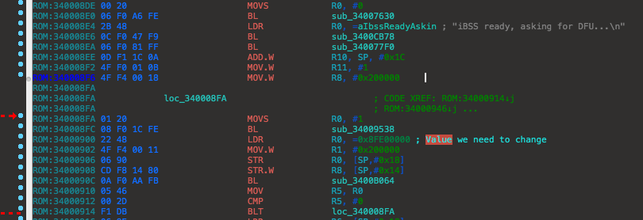
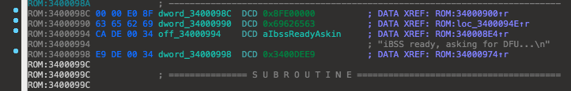
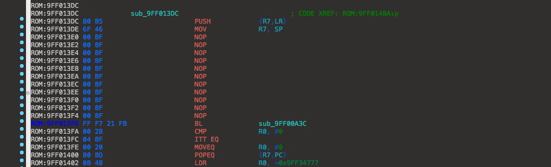
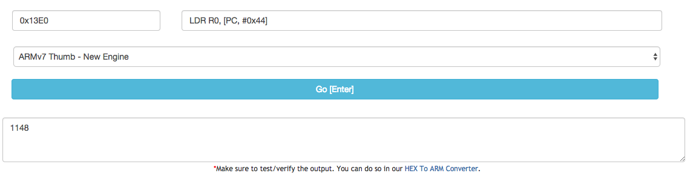

Once you start getting experience patching and you know what to look for, you will notice that iOS 8+
has different instructions, but similar. You will see that the address we need to change in iBSS
is used with a different instruction. Before, it was loaded with MOV, and now it is changed to LDR.
You will also see, once you scroll down a bit, that in the list of the string references, you will
find that the address we need to change is used as a reference and is not part of the instruction itself.
In this page, we are using iPhone4,1 (iPhone 4S) on iOS 8.4.1 (what I have available at the time).
As you can see, this is what we will be focusing on. Its pretty straightforward.
Underneath, here is the actual value we need to change. This is where the references are inside this function.

Since we're patching for the 4S, we need to change 0x8FE0 to 0xBFD0. The process is the same as the others.
You should have something like this if you changed the reference value correctly.
iBEC patching is going to be quite different compared to iOS 7 and below.
We need to add another argument to the boot-args. This is will be "amfi_get_out_of_my_way=1"
Change fsboot to upgrade. After that, go to where "failed to mount upgrade partition is located."
Upgrade routine does not care about auto-boot at this point. Scroll up a little until you find this.
NOP everything from "MOV R7, SP" to the BL above "ITT EQ and CMP." It should look like this.

Now, I'm not as smart as Nyan but they describe the way this works better than I can understand.
"These block devices have names in format nand0X, where X is a character describing partition number
starting from “a”. So block device for third partition would be nand0c. Obviously there’s no such string in iBEC."
Because of this, we need to make our own string. There is a place where there is free space. I put this at
the beginning of the file. In hex view, enter this "6E 61 6E 64 30 63." This is nand0c in hex. Look here.
We need to be able to use our custom string to tell the iBEC that we want to use this. Replace the first
string reference and replace it with the address of our custom string. Mine is at 0x9FF001C0.
As you replace the string with the address of your custom string, open this webpage.
Change ARM64 to ARMv7 THUMB - New Engine. Where we first placed a NOP, take note of the offset and enter it in the Python cli below.
Take note of the offset of where we replaced the first string reference with our custom string. Subtract the custom string's reference
with the other offset. It will go like this: Custom string reference offset - first NOP offset. This is what I get.
Now enter what I input (with your offsets and hex value).

We get "1148." Subtract 0x100 from 1148, which is 1048. Add this, in hex view, to the offset of which the first NOP is.
Afterwards, your function should look like this. You may need to select all and analyze to see "nand0c" be shown.
We're done! iOS 8, 9, and 10 must have these patches, else they will fail.
Return to the main page